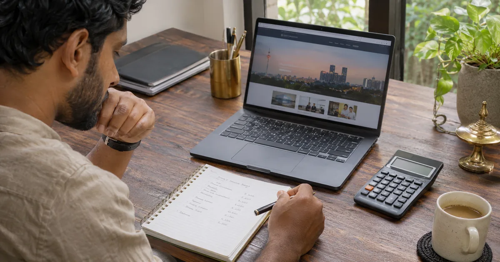
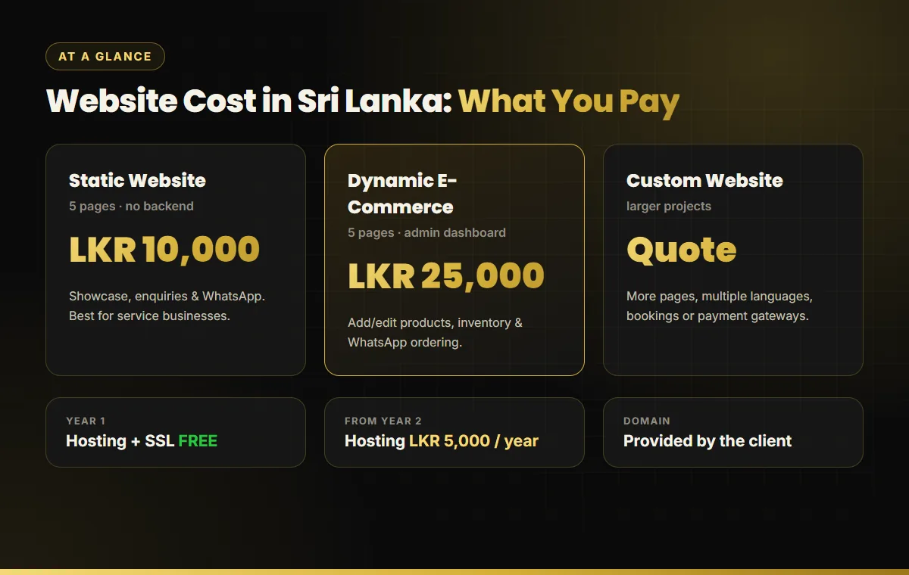

Key takeaways
- A 5-page static website costs LKR 10,000; a dynamic e-commerce website with an admin dashboard costs LKR 25,000.
- Budget for running costs too: a domain name every year, and hosting at LKR 5,000 per year from the second year.
- Page count, an admin dashboard, online payments and extra languages are the biggest drivers of web design price in Sri Lanka.
- The cheapest quote is not always the lowest cost. A slow site that is not built for SEO usually needs paying for twice.
"How much does a website cost?" is the first question almost every Sri Lankan business owner asks, and the answers online range from a few thousand rupees to several lakhs. That gap exists because "a website" can mean anything from a single landing page to a full online store with stock management. This guide explains real web design prices in Sri Lanka for 2026, what is included at each level, and the hidden yearly costs that many quotes leave out.
Quick answer: website prices in Sri Lanka
For most small and medium businesses, a professional website falls into one of three groups:
| Website type | Typical use | Our price |
|---|---|---|
| Static website (5 pages, no backend) | Service businesses, clinics, consultants, portfolios | LKR 10,000 |
| Dynamic e-commerce website (5 pages + admin dashboard) | Shops, product catalogues, businesses that update content often | LKR 25,000 |
| Custom website | More pages, multiple languages, bookings, payment gateways | Quoted per project |
Both fixed packages include a mobile-friendly design, WhatsApp and enquiry integration, basic SEO setup, free hosting and a free SSL certificate for the first year. You can see the full list of inclusions on our web design Sri Lanka price list.

What should a website price include?
When you compare quotes, check that each one covers the same things. A professional website package in Sri Lanka should include:
- Design for mobile first. Most visitors in Sri Lanka browse on a phone, so the mobile layout matters more than the desktop one.
- Contact routes that convert. Click-to-call, a WhatsApp button and a simple enquiry form on every page.
- Basic SEO setup. Unique page titles, meta descriptions, clean headings, an XML sitemap and Google Search Console. Without this, Google has a hard time understanding your pages.
- SSL (HTTPS). Browsers mark sites without it as "Not secure", which scares away customers.
- Hosting for at least the first year, so your site is live from launch day.
- Ownership. The domain, files and content should belong to your business.
If a quote is much cheaper than others, it usually leaves out one of these, most often the SEO setup or the SSL certificate.
7 factors that change your web design price
1. Number of pages
Every page needs layout, content and optimisation. A 5-page site (Home, About, Services, Gallery or Products, Contact) covers most small businesses. Each extra service page adds work, but it also gives you another page that can rank on Google for a specific search.
2. Static or dynamic
A static website is built from fixed files and is updated by a developer. A dynamic website runs on a database with an admin dashboard, so you can add products or posts yourself. Dynamic sites cost more to build. Our guide to static vs dynamic websites explains which one suits your business.
3. E-commerce features
Product catalogues, categories, stock levels and order handling all add development time. Many Sri Lankan stores start with WhatsApp ordering and bank transfers, then add a card payment gateway later when order volume grows.
4. Custom design vs templates
Template sites are quick but look like thousands of others, and they often carry heavy code that slows the site down. Every website we build is custom-coded in HTML, CSS, JavaScript and Laravel/PHP, with no WordPress and no ready-made templates.
5. Languages
A Sinhala, Tamil and English site is effectively two or three sites to plan and maintain. It is worth it if your customers search in Sinhala or Tamil, but it does increase the price.
6. Content and photos
If you provide finished text and good photos, the project moves faster. Copywriting, product photography and logo design are separate jobs and are usually priced separately.
7. SEO depth
Basic on-page SEO is part of every package. Ranking for competitive keywords takes ongoing work such as content, links and technical improvements. That is a separate monthly service, explained in our SEO price in Sri Lanka guide.
Yearly running costs you must budget for
The build price is a one-time cost, but a website also has small yearly costs:
- Domain name: provided and renewed by you, the client. Keep it registered in your own business name so you always control it.
- Hosting: free in the first year with our packages, then LKR 5,000 per year from the second year.
- SSL certificate: included free.
- Updates: with a dynamic site you update products yourself. With a static site, small text changes are done by your developer.
Cheap websites vs good value websites
A low price is only good value if the site actually brings in enquiries. Watch for these warning signs in very cheap quotes:
- The domain is registered in the designer's name, not yours.
- No mobile design shown before the build.
- Pages load slowly because of heavy themes and plugins. Speed affects both rankings and sales, as we saw in our Core Web Vitals case study.
- No titles, meta descriptions or sitemap, so the site is invisible on Google.
Before you choose, read our checklist on how to choose the best web design company in Sri Lanka.
How to get the best website for your budget
- Start with 5 strong pages and add service pages as your business grows.
- Prepare your content early. Your text, logo and photos are the most common cause of delays.
- Choose dynamic only if you will update often. If your offer rarely changes, a static site is faster and cheaper.
- Make sure SEO is built in from day one. Use our SEO-friendly website design checklist to check any quote.
- Connect Google Business Profile. For local businesses, Google Maps SEO often brings calls faster than the website alone.
Want to see what these budgets look like in practice? Browse our web design portfolio of live sites for construction, clinics, e-commerce, SaaS and service businesses.
Get a website from LKR 10,000
Custom-coded, mobile-friendly and SEO-ready, with free hosting and SSL for the first year.

Buddhika S Weerasekara is an SEO consultant and web designer in Sri Lanka who builds fast, search-ready websites for local and international businesses. More about Buddhika.